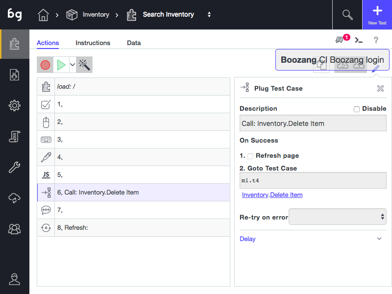

Plug test-case

Plug test-case action
In order to connect the tests together, you can use Plug-test case functionality. Simply use the Plus button to plug in a test case into your current test case. You can select the test case from the menu that appears. After a referenced test has been executed, it will continue the execution of consecutive actions.
Creating a test suite
In Boozang a test suite is simply another test case. Simply use Plug test-case to select the sequence of tests to be executed.
Conditional Tests
Sometimes it´s useful to execute a test if certain conditions are met. One example is to run the login test case when the login button is shown, otherwise, the user is assumed to be already logged in. In order to do this, add a validation exists condition on the Login button. In the action details, under Advanced, add On Success -> Goto Test Case and select the test case you want to be executed (in this case Login).